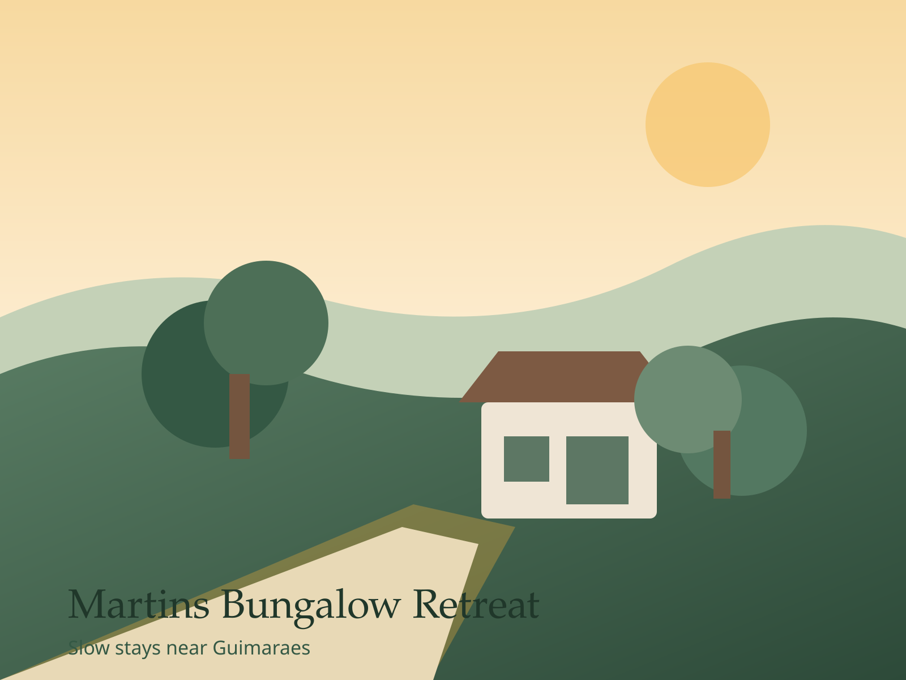
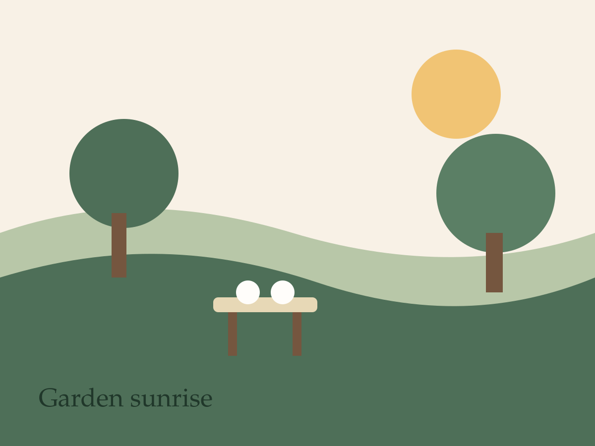
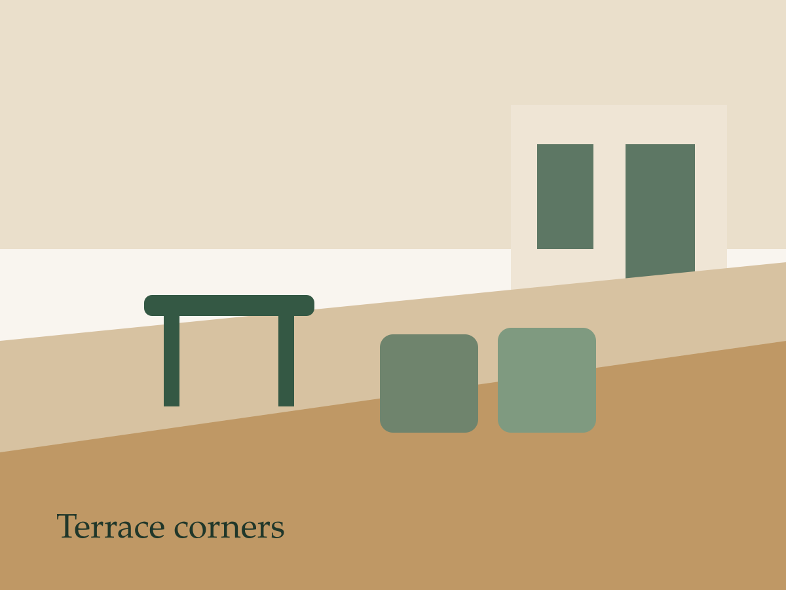
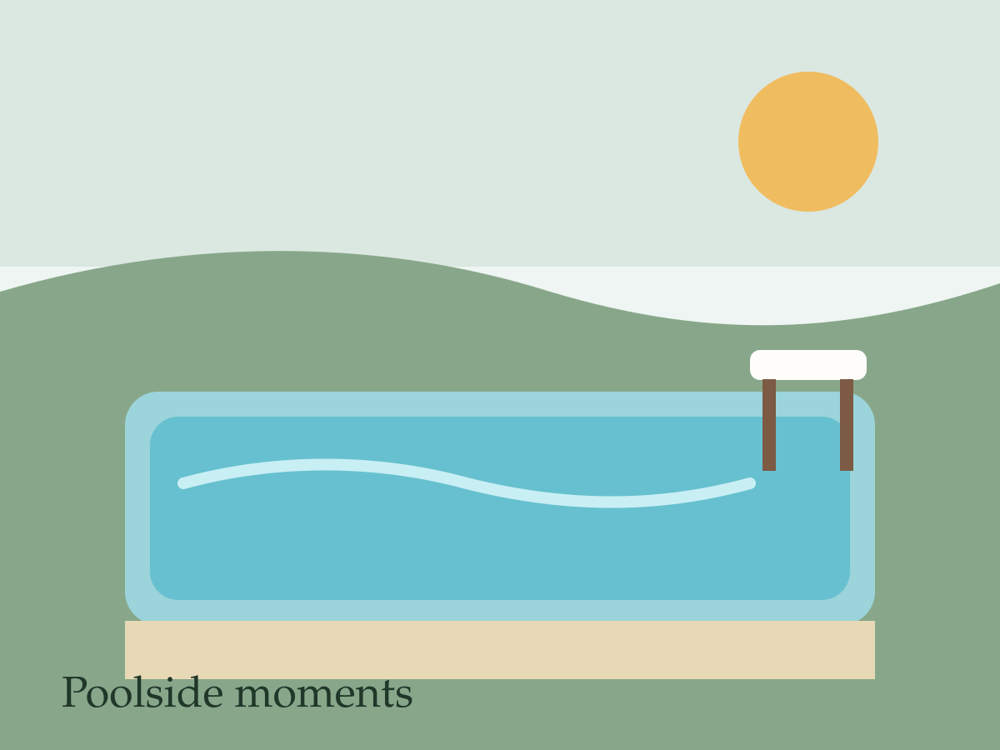
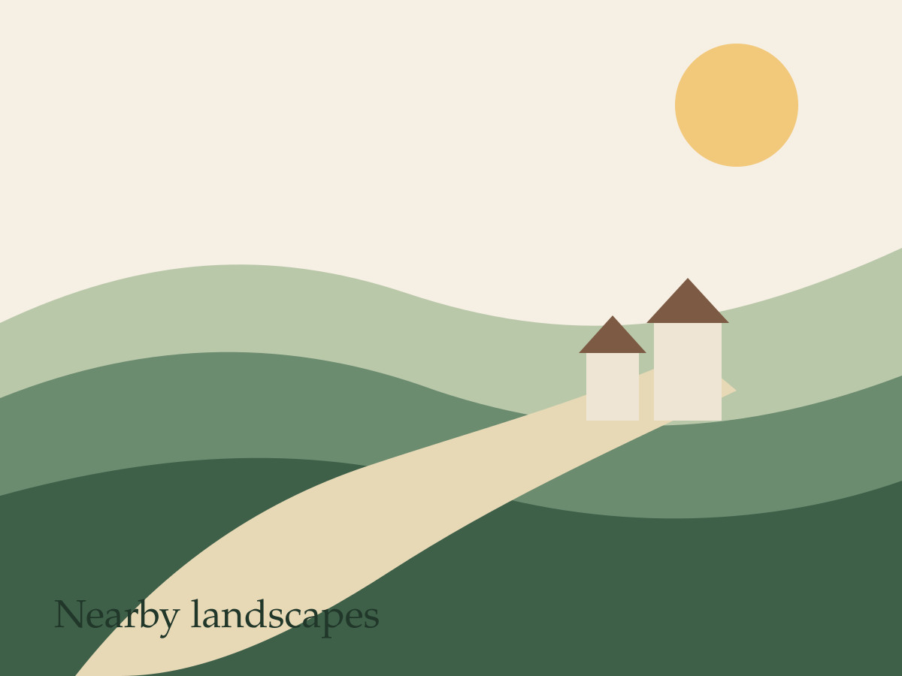

4-6
Guests
Boutique bungalow in Northern Portugal
Martins Bungalow Retreat is designed for travellers who want garden calm, flexible outdoor living, and easy access to the history, food, and landscapes of Northern Portugal.
4-6
Guests
Pool
Sun terrace
Wi-Fi
Parking included
15 min
to Guimaraes

Stay with character
Quiet mornings, outdoor living, and easy access to Guimaraes make the stay feel relaxed from the start.
Wake up to garden views, spend unhurried mornings outside, and enjoy a setting that makes it easy to alternate between rest and day trips.
Whether you are planning a family break, a couples escape, or a longer stay in Northern Portugal, the bungalow is designed to feel practical, private, and warm.
Photo story
A preview of the atmosphere around the bungalow, from garden corners to poolside afternoons and nearby landscapes.




Beyond the bungalow
Martins Bungalow Retreat works well as a base for heritage visits, local food discoveries, and open-air day trips.
Walk the old centre, castle viewpoints, and shaded streets that make easy half-day plans for guests.
Give visitors reasons to book by spotlighting bakeries, markets, vineyards, and relaxed dinner spots.
Hiking routes, picnic stops, and scenic drives help position the bungalow as a practical base for exploring.
Journal and blog
Read about the stay, discover local ideas, and start planning the kind of trip that fits this slower corner of Portugal.

A first post that introduces the property, the mood of the stay, and what guests can expect.
Read article
A reusable example of the kind of local guide that supports bookings and search traffic.
Read article
Another starter article that can grow into a useful blog category for future visitors.
Read articlePlan the stay
Reach out directly for questions, availability, and local planning before your stay.